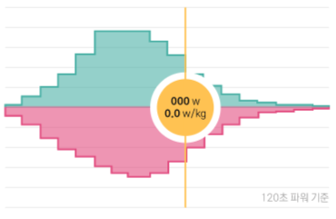
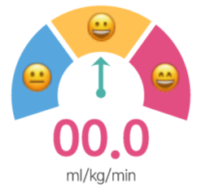
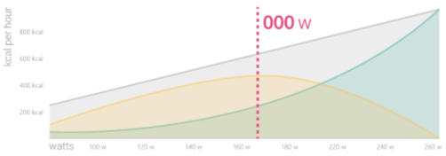

🚴🏻주요 훈련 지표
FTP
🔥VO²Max
🐖🔥Fat Max
-FTP는 모든 파워 트레이닝의 기준점이 되는 파워이며, 생리학적으로 젖산실험에서의 MLSS(maximal lactate steady state)에 대한 추정값입니다.
-VO2MAX는 산소를 들이마시는 최대량을 측정하여 1분당 kg으로 나눈 값입니다.
-FatMax는 1시간당 가장 많은 지방을 연소시킬 수 있는 운동강도(watts)입니다.
⚡주요 피크 파워
-
스프린트 파워(15초)
000w, 0.0w/kg
-
무산소 파워(2분)
000w, 0.0w/kg
-
VO²Max 파워(5분)
000w, 0.0w/kg
-
1시간 파워(15초)
000w, 0.0w/kg
-스프린트 파워는 보통 12~15초를 기준으로 합니다. 신경근파워라고도 하며 무산소성 ATP-PCr(phosphagen system) 시스템에 의존합니다.
-무산소 파워는 1~2분 내외로 무산소성 탄수화물(Aerobic Glycolysis) 시스템에 의존합니다. 젖산이 매우 빠르게 생성됩니다.
-VO2MAX 파워는 일반적으로 4~8분 정도이며 젖산이 환원되는 유산소성 탄수화물(Aerobic Glycolysis)대사 시스템에 의존합니다.
-1시간 파워는 대체로 탄수화물대사에 의존하지만, 지방(Aerobic Glycolysis) 시스템도 활용됩니다. FTP파워는 1시간이 아니라는 점을 유의하세요.
💓주요 피크 파워
-
최대 심박
000bpm
-
회복 심박
000bpm
-
LT1 심박
000bpm
-
LT2 심박(역치)
000bpm
-최대심박은 심박 트레이닝의 기준점이 되는 가장 높은 심박수이며 1분당 심장에 흐르는 전류 신호 횟수를 의미합니다.
-회복 심박은 운동량이 거의 없는 안정된 상태에서의 심박수입니다.
-LT1 심박은 저강도와 중강도 운동을 구분하는 심박수이며 일반적으로 파워 존2~3에 위치합니다.
-LT2는 중강도와 고강도의 경계에 위치하는 심박수이며 FTP와 비슷한 운동강도입니다.
-
Slowtwitch
cycling data
analysis report
-
2022.00.00~2022.00.00
분석 : 멘토
홍길동 님
- 신장
- 체중
- 성별
- 000cm
- 000kg
- 남성
📊기타 훈련 데이터
-
TTE
00분
-
AWC
00.0kj
-
평균파워
000 w
-
평균 NP
000 w
-
평균 IF
0.00
-
평균 훈련량(Day)
00 tss
-
평균 훈련량(Week)
00 tss
-
평균 이동거리
00km
-
평균 라이딩 시간
00분 00초
-
평균 실제 이동시간
00분 00초
-
평균 획득 고도
0000m
www.riduck.com